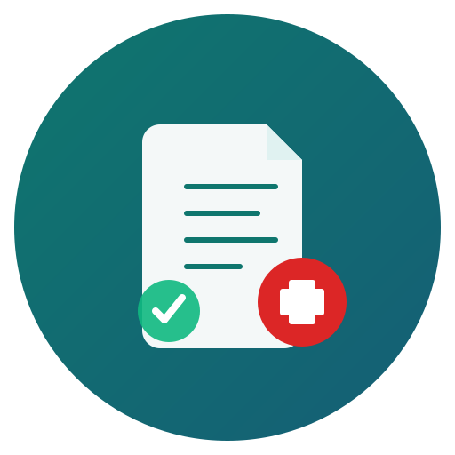

把文件拖到这里，或
支持 .txt / .md / .docx / .pptx
历史记录
加载中...
⚙️ AI 接口设置（可选，用于"AI 深度检查"）
⚠️ Key 仅保存在浏览器内存，刷新后需重填。规则检查完全离线，不依赖此设置。
💡 模型名称请从上方列表选择（如 Claude-Haiku-4.5 / Gemini-2.5-Flash / GPT-4.1-Mini 等）

上传稿件 → 结构化拆解 → 自动标出合规/术语/错别字/标点等问题
把文件拖到这里，或
支持 .txt / .md / .docx / .pptx
加载中...
⚠️ Key 仅保存在浏览器内存，刷新后需重填。规则检查完全离线，不依赖此设置。
💡 模型名称请从上方列表选择（如 Claude-Haiku-4.5 / Gemini-2.5-Flash / GPT-4.1-Mini 等）